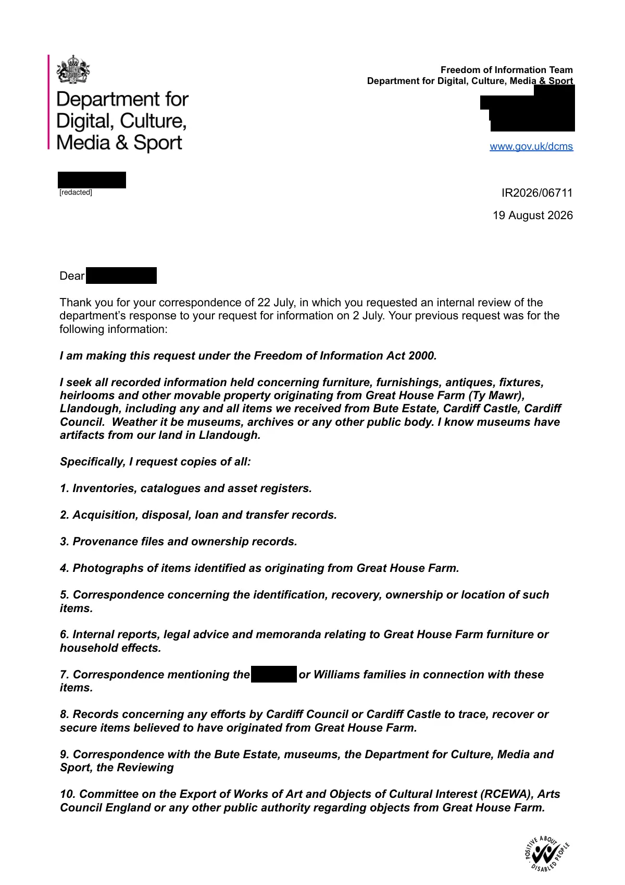

GHF-E106-R29-A2 reply attachment
IR2026/06711 internal review response

Transcript
Requester
Freedom of Information Team
Department for Digital, Culture, Media & Sport
[address redacted]
E:[email redacted]
www.gov.uk/dcms
IR2026/06711
19 August 2026
Dear Requester ,
Thank you for your correspondence of 22 July, in which you requested an internal review of the
department’s response to your request for information on 2 July. Your previous request was for the
following information:
I am making this request under the Freedom of Information Act 2000.
I seek all recorded information held concerning furniture, furnishings, antiques, fixtures,
heirlooms and other movable property originating from Great House Farm (Ty Mawr),
Llandough, including any and all items we received from Bute Estate, Cardiff Castle, Cardiff
Council. Weather it be museums, archives or any other public body. I know museums have
artifacts from our land in Llandough.
Specifically, I request copies of all:
1. Inventories, catalogues and asset registers.
2. Acquisition, disposal, loan and transfer records.
3. Provenance files and ownership records.
4. Photographs of items identified as originating from Great House Farm.
Read more
5. Correspondence concerning the identification, recovery, ownership or location of such items. 6. Internal reports, legal advice and memoranda relating to Great House Farm furniture or household effects. 7. Correspondence mentioning the Requester or Williams families in connection with these items. 8. Records concerning any efforts by Cardiff Council or Cardiff Castle to trace, recover or secure items believed to have originated from Great House Farm. 9. Correspondence with the Bute Estate, museums, the Department for Culture, Media and Sport, the Reviewing 10. Committee on the Export of Works of Art and Objects of Cultural Interest (RCEWA), Arts Council England or any other public authority regarding objects from Great House Farm. [redacted] The department responded on 22 July (our reference FOI2026/06174). You have now requested an internal review, as follows: Thank you for your response dated 22 July 2026 to my request (FOI2026/06174). I am surprised by the conclusion that the Department holds no information whatsoever within the scope of my request. Given the breadth of the Department's responsibilities for heritage, museums, cultural property, public bodies and associated policy, I respectfully request an internal review of the searches undertaken. In particular, I ask that the review considers whether searches were carried out across all relevant Departmental records, including but not limited to correspondence, emails, ministerial submissions, briefing papers, policy files, press office records, media monitoring, parliamentary correspondence, casework, cultural property files, museum policy files, records relating to the Reviewing Committee on the Export of Works of Art and Objects of Cultural Interest (RCEWA), files concerning Arts Council England, advisory body correspondence, archived and legacy records, electronic document management systems, and any records transferred to or held by The National Archives on the Department's behalf. Please ensure searches include all reasonable variations of the property and family names, including "Great House Farm", "Ty Mawr", "Tŷ Mawr", "Llandough", "Llandough, Vale of Glamorgan", "Requester", "Williams", "Cedfin", and any obvious spelling variants. I would also be grateful if you could confirm which business areas, databases and record systems were searched, the search terms used, and whether any information was identified but excluded as being outside the scope of my request. Finally, if the Department has never held any records relating to Great House Farm, Ty Mawr, Llandough, or associated furniture, collections, archaeological material, heritage matters or media coverage, I would be grateful if you could confirm that explicitly. I look forward to the outcome of the internal review. In order to ensure cases are looked at afresh, internal reviews of Freedom of Information (FOI) requests are carried out in our department by officials unconnected to the handling of the original request. I was therefore asked to conduct the internal review and I present my findings below. Following a review of the initial approach and performing further enquiries, I can confirm that the department was warranted to issue a nil return for the questions you raise in your request for an internal review. The department holds no records regarding the specified property, as it was demolished prior to the establishment of the Department for Digital, Culture, Media and Sport, and the department holds no further information relevant to your request. If this is of particular importance to you, the National Archives might be a more fruitful source of information. They can be contacted here. Yours sincerely, Freedom of Information Team Department for Digital, Culture, Media and Sport Complaints and comments If you are not content with the outcome of the internal review, you have the right to apply directly to the Information Commissioner for a decision. The Information Commissioner’s Office have a complaints form which you can utilise to make a complaint. This can be found here: https://ico.org.uk/make-a-complaint/official-information-concerns-report/official-information-concern/.
Artifact description
| Catalogue ID | GHF-E106-R29-A2 |
|---|---|
| What it is | PDF document from DCMS. Attached to an email received on 19 August 2026. 2 pages. |
| From | DCMS |
| Email received | 19 August 2026 |
| Their reference | none given |
| Pages | 2 |
| File | IR2026_06711 Response.pdf (170 KB) |
| State | Read |
Our integration
Concern to test: whether this reply answers the question as asked, or a narrower one. Not checked against the original request wording here.
Related: The covering email · Timeline · Disclosure Dartboard